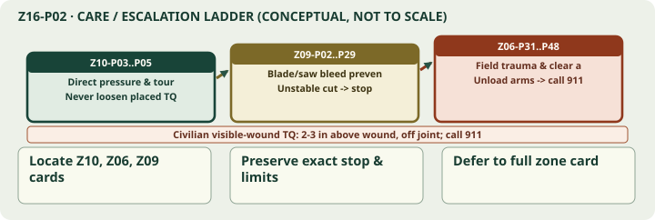

Z16-P02 · Field reference atlas · New manuscript
Life-Threatening Bleeding and Civilian Tourniquet Cross-Reference
Locate the original encyclopedia cards for life-Threatening Bleeding and Civilian Tourniquet Cross-Reference.
When it applies · Offline reference lookup. The linked chapter defines the situation, audience and limits.
Equipment · Offline reader or the complete linked source cards in print.

Actions
- Open Z10-P03 for stop severe external bleeding with firm continuous direct pressure; Z10-P04 for apply commercial tourniquet limits and EMS time documentation.[A10, M01, M02]
- Open Z10-P17 for control junctional bleeding where a tourniquet cannot be placed; Z10-P05 for recognize circulatory shock and insulate patients while withholding oral fluids.[A10, M01, M05]
- Read the linked card’s applicability, equipment and stop conditions together. Keep review and source limitations attached to any excerpt.[A10, ED]
Failure recognition · Acting on a keyword or title while overlooking an upstream exception or stop condition.[A10, ED]
Verify · Confirm the exact page ID and read the full conditions before using the reference.[A10, ED]
Stop or change course · For a visible, life-threatening arm or leg wound, use a suitable commercial tourniquet according to training and device directions. Open Z10-P04 for joint avoidance and placement. Wound packing is a separate trained or dispatcher-guided decision.[A10, M02, M01]
Evidence and editorial notes
- A10 · FEMA / Ready.gov · Make a Plan (current web edition)
- Section: Offline reader navigation, historical lineage, and HOLD transparency · Conditions: Using the complete 16-zone offline archive, zone readers, and print proofs
Support: Navigation aids expose draft status, reconstruction lineage, open diagnostic photo needs, and pending specialist holds on every lookup path.
Limitations: This index entry does not independently establish any safety, regulatory or diagnostic instruction. · Conflicting evidence: None noted.
Editorial note: Index design and cross-reference policy. Substantive directions come from linked upstream chapter claims. · Specialist reviewer: Accessibility, print QA, and editorial reviewer
Primary source · checked 2026-11-24 - M01 · American College of Surgeons · STOP THE BLEED Training Course (current web edition)
- Section: Ensure Your Own Safety; Find Life-Threatening Bleeding; Compress · Conditions: Lay responder encountering severe external hemorrhage
Support: Ensure scene safety first, call 911, expose the wound to locate life-threatening bleeding, and apply firm continuous direct pressure with clean gauze or cloth.
Limitations: Does not replace formal hands-on Stop the Bleed training or EMS trauma care. · Conflicting evidence: None across ACS/ARC guidelines.
Editorial note: Separates life-threatening arterial/venous hemorrhage from minor scrapes. · Specialist reviewer: Wilderness medicine and trauma EMS
Primary source · checked 2026-11-24 - M02 · American Red Cross · How to Apply a Tourniquet (Current web edition)
- Section: How to Apply a Tourniquet; Windlass Rod Tourniquet · Conditions: Life-threatening extremity bleeding, visible wound, suitable commercial device
Support: Place the device 2–3 inches toward the torso from the wound, between wound and heart, clear of joints. Tighten until bleeding stops and leave in place for medical personnel.
Limitations: Identify a visible wound and follow the exact device and training. This is not the tactical high-and-tight rule or a pediatric device-fit approval. · Conflicting evidence: See A02 claim audit for boundaries.
Editorial note: Governs extremity hemorrhage escalation and strict EMS handoff documentation. · Specialist reviewer: Trauma EMS and wilderness medicine
Primary source · checked 2026-11-25 - M05 · NIH / MedlinePlus · Shock (current web edition)
- Section: Recognizing Circulatory Shock and Positioning · Conditions: Injured or ill patient with pale cool clammy skin, rapid weak pulse, confusion, or dizziness
Support: Treat suspected shock as a life-threatening emergency: call 911, control external bleeding, keep the person warm and insulated from cold ground, and do not give food or drink.
Limitations: Field responders cannot diagnose internal hemorrhage or administer IV fluids. · Conflicting evidence: None; reinforces keeping suspected shock patients NPO and warm.
Editorial note: Core shock recognition and stabilization boundary in Z10. · Specialist reviewer: Emergency and wilderness medicine
Primary source · checked 2026-11-24
Source lineage · New manuscript (Z16 P20 emergency index) · Classification · New manuscript.